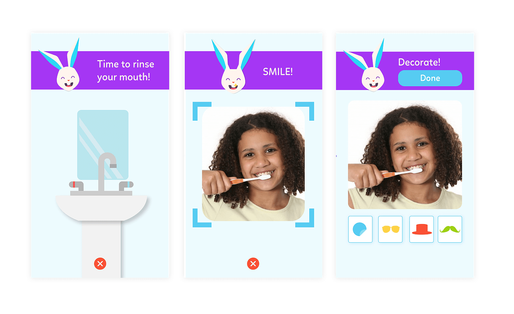
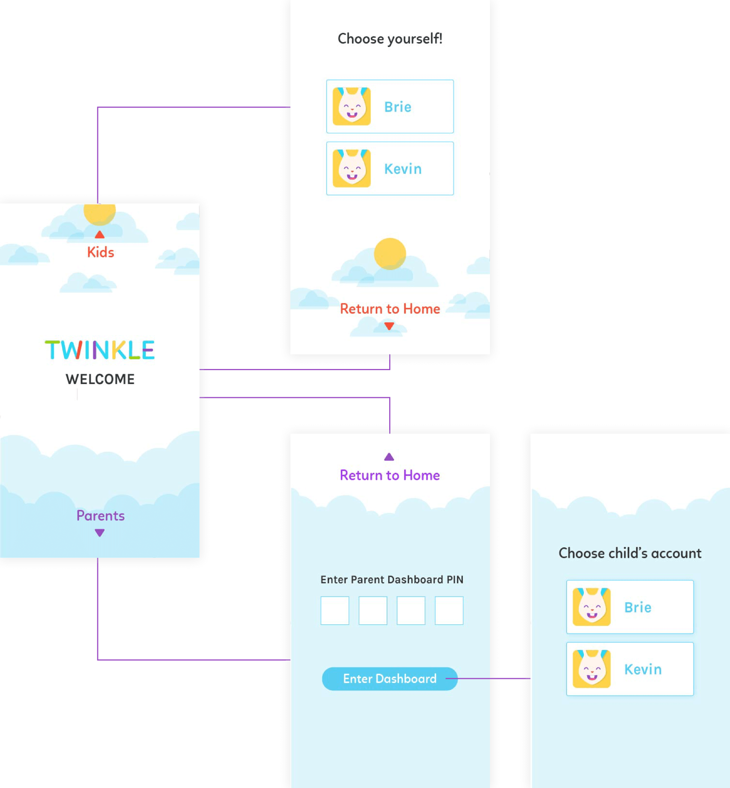
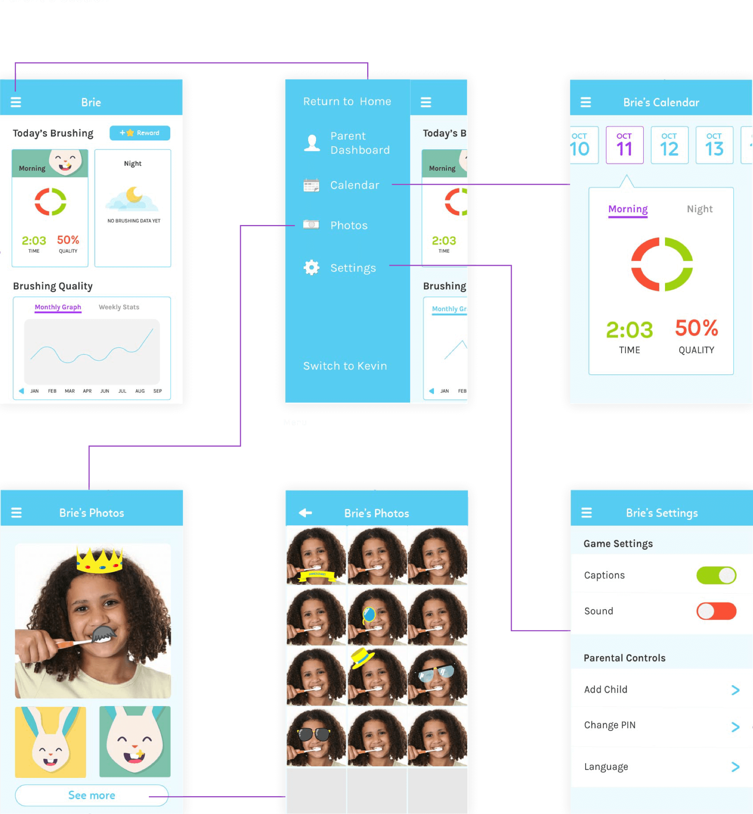

Twinkle is a dental hygiene solution for kids. It makes the mundane task of brushing teeth into a fun and desirable activity. Our team's goal was to craft a mobile application that brought parents and kids together on the task of brushing teeth.
The application makes use of the front facing smartphone camera to track the sectors of the mouth that the child is brushing, providing parents detailed information on their kids brushing quality. Through fun camera-based games, Twinkle attempts to add excitement to the task of brushing so that kids have motivation to come back every day.
In six 20-minute in-person interviews, we uncovered key insights into the relationship between parents, kids, and brushing teeth. Finding users was a challenge, as our team didn't have any direct connections to the target audience of parents of young children. We got resourceful and visited a local library to approach any parents we found.
Parental Concerns
Parents were chiefly concerned with getting their kids to brush without reminders or nagging and getting kids to brush all areas of the mouth for a satisfactory amount of time (typically 2 minutes).
Kids Like Customizability
Kids are excited about getting items in games, and particularly enjoy games where customizing appearance is a feature.
Kids Want to Feel Grown Up
Kids enjoy feeling grown up through gaining more responsibilities. Many kids mentioned liking a sense of progression.
Parents on Their Kids & Tech
Parents generally limit their kid’s interaction with tech, seeking to limit ‘smartphone dependency.’ A key concern is the fear that tech draws kids away from real life skills.
Our team diverged to create initial sketches for the app, then converged to discuss and create the mid-fidelity. With this method, we explored a range of possible ideas before committing to our first iteration. We then created a clickable prototype on POP.
Our collaborative Figma of the low-fidelity.
Integrating Parent & Kid Sections
One key challenge of this app was that it had to house both a kid's section where they can play games, and a parent's section where they can keep track of their kid's progress. One way we accounted for these two audiences was through PIN locking the parent section.
Our initial landing page had two buttons for users to choose either the kid section or the "Parental Dashboard." We made the kid section button large, as we wanted to make it easy for kids to access. However, in user testing we found this layout to be confusing.
Games Navigation
A unique challenge of this app was figuring out how the kid would navigate while brushing their teeth. In our user scenarios, we envisioned the parent handing off the app to the kid with the front facing camera activated. In this situation, it made sense for the kid to have control over what game to choose via the camera mode. This scenario provided particular gestural constraints. We wanted to make sure that the navigation was easy, as it would be completely through gesture and would lack certain functions of touch control, such as tapping.
In-Game Positioning
As the app's tracking depends on kids staying within the frame of the camera, we also had to figure out how to communicate to energetic kids that they needed to stay within a range. Our solution was to have the frame flash red and make warning sounds once a kid was outside the range. The screen would also show a green silhouette of a person in the center, to encourage the kid to return to the center of the screen.
Data Included in Parent Dashboard
For the parent dashboard, we wanted to quickly and visually show relevant data to them. In our interviews, we found that many parents 'settled' when it came to their kid's brushing. "I just make sure she brushed, hopefully for somewhere around two minutes. I don't have the energy to even make sure she's brushing the right areas." Based on this, our aim was to quickly provide parents with key data. However, we wanted to balance this out with more in-depth information as well, such that parents can get a better sense of their kid's brushing habits-- a holistic view that is hard to track without an app.

Designing UI for Both Kids & Parents
While we needed the UI to be cohesive, we also had to cater to both kids and parents. For the kids section, we incorporated larger buttons illustrated by icons, for younger children who may not know how to read yet. We also avoided hiding elements-- for example, how a hamburger icon hides a menu as we wanted to make navigation as clear as possible. Though we used bright colors throughout the app, we kept the parents' section more muted in comparison to the kids' section. Side by side comparison of a page in the parent section vs. a page in the kid section. Note the large buttons, bright colors, and icons of the kid page. We also used metaphors such as "Treasure Chest" to injects some playfulness for the kids.
We tested our clickable prototype with seven families through in-person usability tests at a local mall. While we initially had some difficulties finding people willing to talk, we ultimately found that talking to families at the rest area was effective. In general, these families were low-income, a part of Twinkle's primary target audience. Through these tests, we uncovered some overarching issues.
Integrating Parent & Kid Sections
Many users were confused by how we initially separated the parent and kid sections in the app. The architecture of the app was not immediately apparent to them, especially as the parent and kid sections had different navigation systems. Our solution was to have the user enter on a landing page, where they could either swipe up or down to access the parent or kid section. While this added an extra step when entering the app, we felt that it was a natural way entry point for users into the flow of the app, making it clear at first entrance what the app encompasses. The unique structure of this page helped users better grasp the overall architecture of the app vs. the original landing page. A concern was whether or not swiping would be intuitive for kids. Therefore, if the user taps on either arrow, they will also be transported to the respective area of the app.
Reward System
The in-game reward system was confusing as it was unclear how kids would be motivated. Parents were also concerned about motivating their kids via digital rewards, as they felt the focus wasn't on forming good habits. In order to enhance parent-kid relationships, and not replace them with the app, we decided to implement a reward system that required the parent to reward the kid. By having the parent in control of the rewards, we also promoted opportunities for parents to discuss why having good brushing habits were essential. Upon reviewing their kid's brushing, parents can choose to reward their kids or not. This gives parents the control to teach their kids good habits. The kids can spend these rewards on stickers to decorate their selfies.
Onboarding Adding Kid Profiles
Making an overall account and then an individual account for the kid was confusing for people. Its initial placement on the landing made it unclear that the profile was also an element of the parent dashboard. Therefore, we changed decided to make it a part of the initial onboarding process. The initial language on the left was confusing. People weren't sure what the benefits for adding a kid's profile was, or how that related to the rest of the app.
Animal Mascot
The series of instructions that came prior to brushing wasn’t engaging. We therefore decided to include an animal mascot that interacted with kids. This also helped us tie the brand closely with the app. 
Onboarding
Landing Page 
Kid Section
Parent Dashboard 
Twinkle appeals to the target audience of 5-12 year olds through colorful and bold design elements that are playful and exciting. We chose a bunny as the logo as it’s a friendly animal that is known for its teeth. An animal logo also provides an engaging mascot that kids of all appearance can relate to.